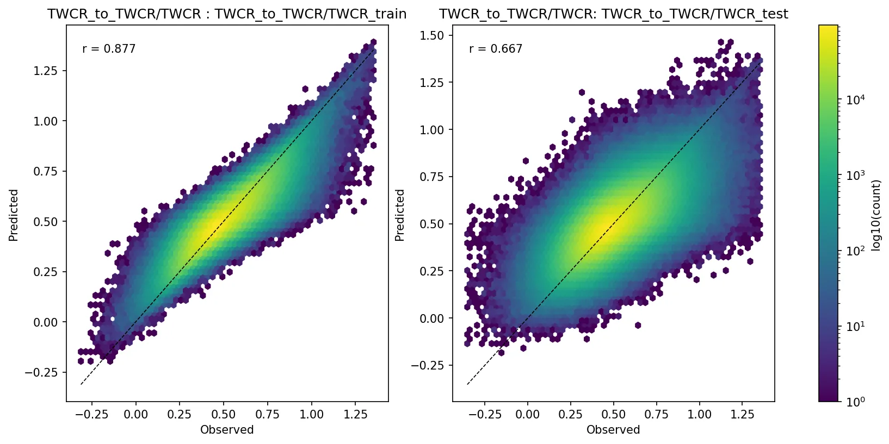
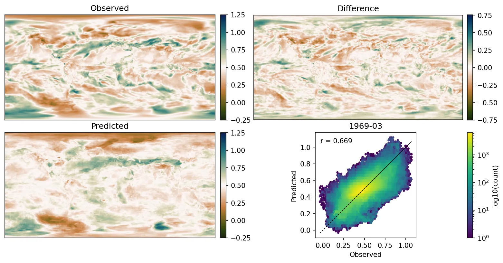

Fitting a decision-tree model with XGBoost¶
We want to create a model that can estimate precipitation from other surface fields. We will use the XGBoost library to fit a decision tree regression model. We can extract, from the normalized data, a set of input values (temperature, pressure, humidity, wind) and a target value (precipitation) for a particular month, latitude and longitude. If we do this for many latitude and longitude points, for each of many months, we can create a training dataset with many thousands of input::target pairs. We can then use this training dataset to fit the model. If we have 100 years of data, that’s 1200 months - the data grids are 1440x721, so that’s 1,038,240 grid points per month, and therefore 1,245,888,000 potential input::target pairs in the training dataset. We don’t need that many, so we sub-sample - typically taking only 5000 random points per month, and choosing only a 20-year training period (for example 1950-1969). This gives us a training dataset with 1,200,000 input::target pairs, which is more than enough to fit a model. Repeating this process, with a different random sample of lat::lon points, and maybe a different range of years, gives us a test dataset that we can use to validate the model.
Script to assemble training data from the normalized datasets
Script to fit the model and select the number of boosting rounds with cross-validation
The script fits a decision tree regression model. The settings below describe the hyperparameters passed to XGBoost and the cross‑validation choices used to select the number of boosting rounds, together with the effect of changing each setting.
Hyperparameters¶
objectiveCurrent:
reg:squarederrorEffect: Determines the loss optimized during training. Changing the objective (for example to a robust regression loss or a classification objective) changes what the model learns and can improve robustness to outliers or change the task.
boosterCurrent:
gbtreeEffect: Chooses the model family.
gbtreebuilds decision trees and captures non‑linear interactions;gblinearfits a linear model that is faster for very high‑dimensional sparse data but cannot model non‑linear relationships.
eta(learning rate)Current:
0.1Effect: Controls the step size at each boosting round. Smaller values (e.g.
0.01) slow convergence and generally improve generalization (but require more rounds); larger values (e.g.0.3or1) speed training but increase risk of unstable convergence and overfitting.
max_depthCurrent:
10Effect: Maximum depth of each tree. Increasing depth allows modeling more complex interactions but raises overfitting risk; decreasing depth regularizes the model and reduces variance.
subsampleCurrent:
0.8Effect: Fraction of training rows sampled per tree. Lower values add randomness, reduce overfitting and tree correlation, but increase bias;
1.0disables row subsampling.
colsample_bytreeCurrent:
0.8Effect: Fraction of features sampled per tree. Lower values reduce feature correlation across trees and help generalization when many features are irrelevant; higher values reduce bias but can increase overfitting.
min_child_weightCurrent:
50Effect: Minimum sum of instance weights (roughly a minimum leaf sample size). Larger values make trees more conservative (fewer, larger leaves) and reduce overfitting; smaller values allow small leaves and finer fits, increasing overfit risk on noisy data.
lambda(L2 regularization)Current:
5.0Effect: L2 penalty on leaf weights. Larger values smooth predictions, reduce variance and combat overfitting; very large values can cause underfitting.
alpha(L1 regularization)Current:
1.0Effect: L1 penalty on leaf weights. Encourages sparsity in learned weights and can improve robustness; increasing
alphaincreases sparsity and regularization.
seedCurrent:
42Effect: Controls randomness (fold splits, sampling). Changing the seed yields different stochastic realizations; keep it fixed for reproducibility or vary it for ensembles.
verbosityCurrent:
1Effect: Controls logging level.
0is silent; higher values print more training diagnostics.
tree_methodCurrent:
histEffect: Chooses the tree construction algorithm.
histis efficient on CPU for large datasets;gpu_histenables GPU acceleration if available;exactis more precise but much slower for large data.
Cross‑validation specification¶
The script runs xgboost.cv on the training DMatrix to select the number of boosting rounds. Each option below is taken from the script and the effect of changing it is noted.
params(passed through)The same parameter dictionary used for training is used inside each CV fold; changing those parameters changes the learner behaviour and the CV‑estimated optimal number of rounds.
num_boost_roundCurrent:
2000Effect: Upper bound on boosting rounds considered by CV. Larger values allow more rounds (useful with small
eta) but increase compute; with early stopping this acts as a safe maximum.
nfoldCurrent:
5Effect: Number of CV folds. Increasing
nfold(e.g. to 10) gives a more stable generalization estimate but multiplies compute; decreasingnfoldspeeds CV but reduces reliability. For temporally correlated data, standard k‑fold can leak information—use blocked or grouped CV instead.
metricsCurrent:
("rmse",)Effect: Metric(s) used to evaluate performance on each fold. Changing the metric (for example to MAE) changes which model/rounds are selected; pick a metric aligned with modeling goals.
early_stopping_roundsCurrent:
20Effect: Number of rounds without improvement on the test metric before CV stops. Larger values are more patient but cost more compute; smaller values stop earlier and save compute but risk premature stopping due to noise.
as_pandasCurrent:
TrueEffect: Returns CV results as a pandas DataFrame for easy inspection; setting
Falsereturns a dict.
seed(for CV)Current:
42Effect: Controls randomness in fold assignment and sampling. Changing it yields different fold splits and possibly different best rounds.
- CV result handling
The script sets
best_rounds = int(cvres["test-rmse-mean"].idxmin() + 1).Effect: Chooses the boosting round index with minimum test RMSE mean (zero‑based index + 1) for final training. You may prefer a more conservative selection (for example adding a safety margin or using a one‑standard‑error rule).
There’s plenty of scope for improving the model by tuning these hyperparameters and CV settings, but we have done only very limited hyperparameter tuning so far.
Validation¶
The most straightforward validation of the model is to compare the modelled precipitation with the target precipitation. We can do this both for the training period (to check that the model can learn the training data) and for a test period (to check that the model generalizes to unseen data).

Modelled vs target precipitation for the training (left) and test (right) datasets for one example model (Figure source). Note that part of the reason for the less-good fit of the test dataset is that the test dataset is drawn from a different time period than the training dataset, and data inhomogeneities mean that a model for one period will not work perfectly for another - this isn’t a model deficiency - it’s what we are using the model to discover.¶
It’s also interesting to look at the spatial pattern of the predicted precipitation:

Spatial pattern of the predicted precipitation from one example model for one month (Figure source).¶

{kind=link}
{kind=link}